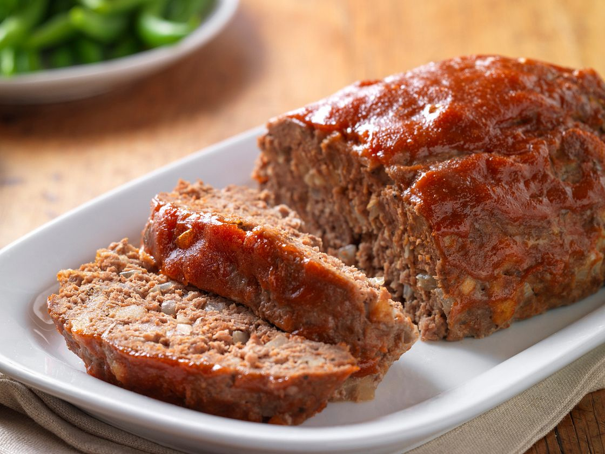

Meatloaf

Meatloaf is a classic comfort food that's simple to make and perfect for a family meal. It typically consists of ground beef mixed with breadcrumbs, eggs, and seasonings, then baked in a loaf shape. This dish is known for its hearty flavor and versatility in seasoning and toppings.
Ingredients
- Meat: Ground beef (about 1.5 lbs)
- Breadcrumbs: 1 cup
- Eggs: 2 large
- Onion: 1 onion, finely chopped
- Garlic: 2 cloves, minced
- Tomato Sauce: 1/2 cup
- Spices: Salt, black pepper, dried thyme, dried oregano
- Milk: 1/2 cup
- Worcestershire Sauce: 2 tablespoons
- Ketchup: 1/4 cup (for topping)
How to Make Meatloaf Step by Step
- Preheat the oven to 350°F (175°C).
- In a large bowl, combine ground beef, breadcrumbs, eggs, chopped onion, minced garlic, milk, Worcestershire sauce, and seasonings.
- Mix until well combined, but avoid overmixing.
- Form the mixture into a loaf shape and place in a baking dish.
- Spread ketchup on top of the meatloaf.
- Bake for 1 hour or until the internal temperature reaches 160°F (71°C).
- Let the meatloaf rest before slicing and serving.